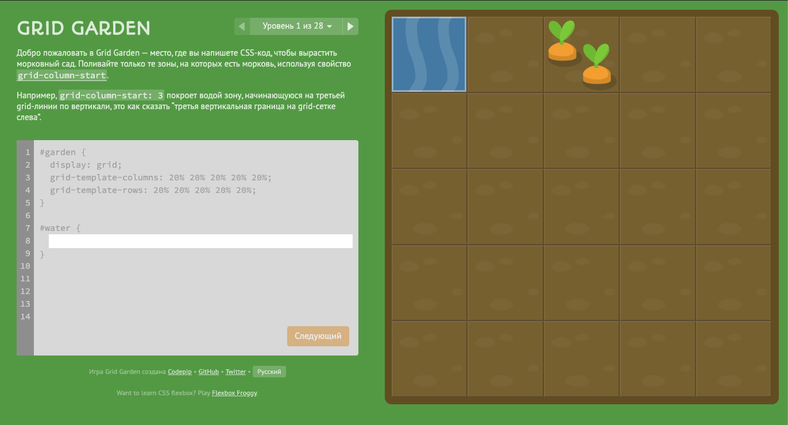

Float vs. Flexbox vs. Grid
Float
Float is a property that allows you to determine on which side the element will be aligned.
float: left | right;
To cancel positioning, for this it is enough to register
float: none;
It’s best to use float to wrap text around a picture

Floats for menu
What is the minus of using float?
- clearfix
- empty div
- overflow
clearfix
.clearfix::after {
content: '';
display: block;
clear: both;
}
empty div
div {
clear: both;
}
overflow
.parent {
overflow: auto;
}
Useful links
Next generation
Flexbox vs. Grid
What's better yo use?

Flexbox
The Flexbox Layout (Flexible Box) module aims at providing a more efficient way to lay out, align and distribute space among items in a container, even when their size is unknown and/or dynamic (thus the word "flex").
Browsers support
The main idea of flex templating
Elements in flexbox can be located along the main axis (from main-start to main-end) or along the сross axis (from cross-start to cross-end).

Properties for the Parent (flex container)

display
.flex-container {
display: flex;
}
flex-direction
row | row-reverse | column | column-reverse

flex-wrap
nowrap | wrap | wrap-reverse

justify-content

align-items

Properties for the Children (flex items)

order

flex-grow

align-self

Useful links
CSS Grid
CSS Grid provides new features
- The layout takes into account horizontal and vertical space at the same time
- You can safely change the layout without affecting the layout
- A minimum amount of media queries is required to adapt in free space
Grid container

If you are just starting your study of CSS Grid, then I recommend passing the game Grid CSS Garden.
